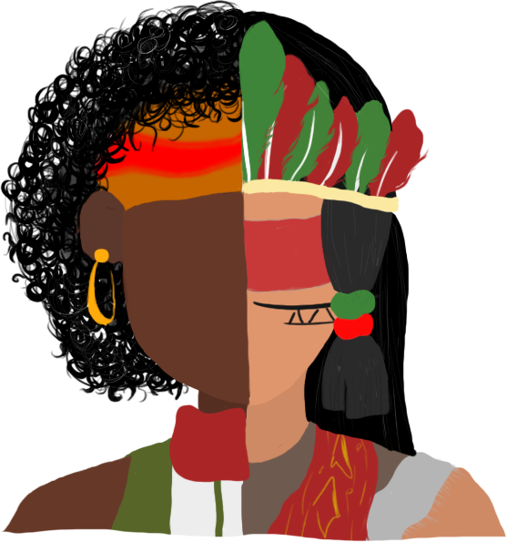

Mostra Cultural
Campus Avançado Porteirinha
Quando você vê uma pessoa negra, o que você pensa:
que ele é um bandido?
que ele sofreu muito pela sua cor?
ou que ele é um cidadão como qualquer outro?
Quando você vê uma pessoa negra, o que você pensa:
que ele é um bandido?
que ele sofreu muito pela sua cor?
ou que ele é um cidadão como qualquer outro?
O Núcleo de Estudos, Pesquisa e Extensão Afro-brasileiros e Indígenas – NEABI, tem como finalidade promover a discussão das relações étnico-raciais na sociedade brasileira, de forma a contribuir para a promoção da equidade racial, bem como assessorar na inclusão, no currículo oficial da rede de ensino, da temática “História e Cultura Afro-Brasileira e Indígena”, nos termos da Lei nº 11.645/2008, e da Resolução CP/CNE nº 01/2004, pautada na construção da cidadania, por meio da valorização da identidade étnico-racial, especialmente de negros e indígenas. O NEABI, tem buscado organizar atividades que contemplem os diversos aspectos da história e da cultura que caracterizam a formação da população brasileira, a partir das diversas matrizes africanas e etnias indígenas, tais como o estudo da história da África e dos africanos, a luta dos negros e dos povos indígenas no Brasil.
“Como negra, não quero mais ser objeto de estudo, e sim o sujeito da pesquisa.”
Saiba Mais"Eu tenho um sonho. O sonho de ver meus filhos julgados por sua personalidade, não pela cor de sua pele."
Saiba Mais"Jogue-me no oceano com meus antepassados que pularam dos navios, porque sabiam que a morte era melhor do que a escravidão."
Saiba Mais
"Enquanto não houver justiça pra nós, juro que pra vocês não vai
ter paz."
"Fogo nos racistas."
Venha prestigiar o stand antirracista do 2° integrado
informática no IFNMG - Campus Avançado Porteirinha
"Não lutamos por integração ou por separação.
Lutamos para sermos reconhecidos como seres humanos."
Malcon
X.
19.11.22
.png)
07:00
Maps
.png)
.png)